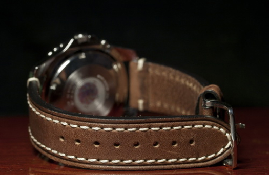

Как выбрать ремешок
Средний срок эксплуатации ремешка 2-3 года, после этого, его лучше заменить. Покупка нового ремешка поможет полностью изменить внешний вид часов.Интересный факт: летчики начала ХХ века закрепляли на запястье часы, чтобы не отвлекаться во время управления самолетом. Их занимал вопрос функциональности. Теперь, в XXI веке, мы используем наручные часы как аксессуар.
МАТЕРИАЛ РЕМЕШКА
Кожа. Это классический материал, он мягкий, гибкий и элегантный. Имеет прекрасный внешний вид и приятный запах, когда новый, но сильно изношенный ремешок накапливает неприятные запахи и грязь. Поэтому кожаный ремешок нужно вовремя менять, средний срок службы 2-3 года.
Силикон, каучук. Чаще всего это ремешки спортивного стиля. Их удобно носить каждый день, можно мыть. Такие ремешки очень легкие и эластичные, плотно прилегают к коже. Имеют долгий срок службы. Ремешки из каучука популярны у дайверов. При покупке учитывайте то, что светлые ремешки из силикона могут пачкаться и выгорать на солнце.
Карбон. Легкий и очень прочный материал, его часто используют в моделях для экстремальных видов спорта. Из недостатков можно отметить жесткость, но многие компании применяют более мягкие материалы в том месте, где ремешок соприкасается с кожей.
Ткань. Используют в fashion-часах. На ткань часто наносят разные принты. Сатин и брезент — наиболее популярные материалы. Недостатки: быстро пачкаются, неустойчивы к влаге.
Нейлон. Ремешки из нейлона стали популярны после выхода очередной части «Агент 007», где герой носил Rolex на полосатом ремешке в стиле миллитари — NATO. Ремешок из нейлона устойчив к влаге и механическим повреждениям, легкий, прочный и гипоаллергенный.
Паракорд. Создан из прочных и легких нейлоновых нитей. Изначально паракорд использовался в стропах парашютов. В часовой индустрии из него научились плести ремешки для часов. Часы с ремешком из паракорда можно найти у бренда Victorinox. В экстренной ситуации ремешок можно расплести на отдельные жгуты, которые выдерживают нагрузку до 250 кг. Заплетают ремешки обратно на фабрике Naimakka в Швейцарии.
Керамика. При правильном использовании керамика может прослужить очень много лет, главное условие — защищать часы от падений и ударов. Браслеты из керамики гипоаллергенные, не царапаются, приобретают температуру тела владельца, очень легкие. Самые знаменитые часы из керамики — RADO.
Металлические браслеты. Сочетаются с одеждой любого стиля. Долго сохраняют свой внешний вид, устойчивы к износу, их можно отполировать (если не нанесено PVD-покрытие). Можно уменьшить или добавить дополнительные звенья. Популярные материалы: сталь, титан. В некоторых люксовых моделях используются драгоценные металлы. Но нужно помнить, что золото — мягкий металл, на нем быстро появляются царапины, поэтому носить такие часы стоит аккуратно.
РАЗМЕРЫ РЕМЕШКА И БРАСЛЕТА
Есть ремешки, которые подходят только для одной или нескольких моделей часов, они называются «интегрированными». Их нужно подбирать в соответствии с референсами часов. Браслеты чаще всего «интегрированные».
При подборе других ремешков стоит учитывать ширину крепления к часам и ширину крепления к застежке, а также длину меньшей и большей половины ремешка.
Если ремешок будет шире, его не установишь, если меньше, крепление будет ненадежным. Длину ремешка лучше подбирать так, чтобы не использовались крайние отверстия свободного конца ремешка.
Металлические браслеты состоят из звеньев, убирая и добавляя которые можно легко отрегулировать длину.
 Для правильного определения длины ремня сначала измеряется запястье, а затем измеряется корпус часов. Из длины запястья вычитается длина корпуса и суммируется расстояние до четвертого отверстия от начала ремешка (длина крепления в расчет не берется).
Есть ремешки, которые подходят только для одной или нескольких моделей часов, они называются «интегрированными». Их нужно подбирать в соответствии с референсами часов. Браслеты чаще всего «интегрированные».
При подборе других ремешков стоит учитывать ширину крепления к часам и ширину крепления к застежке, а также длину меньшей и большей половины ремешка.
Если ремешок будет шире, его не установишь, если меньше, крепление будет ненадежным. Длину ремешка лучше подбирать так, чтобы не использовались крайние отверстия свободного конца ремешка.
Металлические браслеты состоят из звеньев, убирая и добавляя которые можно легко отрегулировать длину.